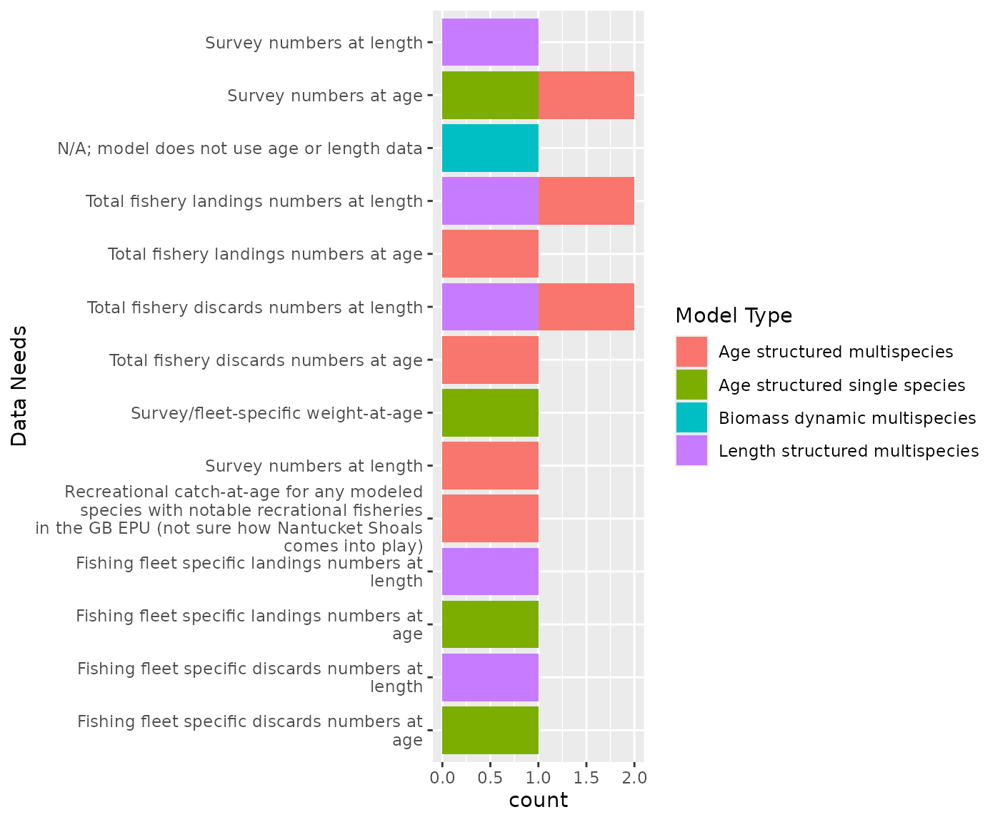
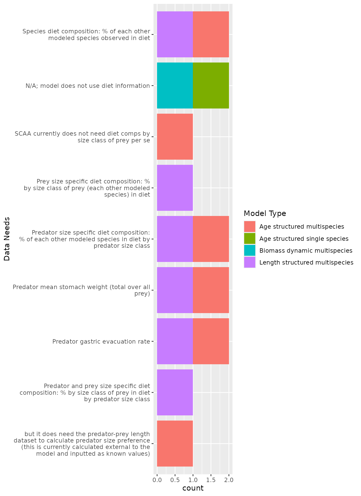

vignettes/CompsDat.Rmd
CompsDat.Rmd(We first load the survey results.)
#survey link https://forms.gle/5PkpTiCvXEgda2it6
#results link https://docs.google.com/spreadsheets/d/1BZFqpIfmPdUW0XG3nyZbRrCBW-N-jV_r26mG7oKVdlQ/edit#gid=1759185696
# resultfile <- drive_find(pattern = "MS-Keyrun Compositional", type = "spreadsheet")
# responses <- drive_download(resultfile, type = "csv", overwrite = TRUE) %>%
# {read.csv(.$local_path)}
responses <- read.csv("supportingFiles/MS-Keyrun Compositional Data Needs (Responses) - Form Responses 1.csv",header=T)
names(responses)[3] <- "ModType"
names(responses)[4] <- "ModName"
names(responses)[5] <- "AgeLength"
names(responses)[6] <- "AgeNeeds"
names(responses)[7] <- "LengthNeeds"
names(responses)[8] <- "Diet"
names(responses)[9] <- "DietNeeds"
names(responses)[10] <- "Comments"Multispecies models will focus on 10 species: Atlantic herring, Atlantic cod, goosefish, haddock, spiny dogfish, winter founder, yellowtail flounder, Atlantic mackerel, silver hake, and winter skate.
Models will estimate population parameters based on fits to biomass, catch, and (if appropriate) size or age information, establish reference points, and evaluate status for the interacting species. Data needs by model type are summarized below.
compdat <- data.frame(ModType = responses$ModType,
ModName = responses$ModName,
AgeLength = responses$AgeLength) %>%
filter(ModType != "NA") %>%
separate_rows(AgeLength, sep = ",")
dietdat <- data.frame(ModType = responses$ModType,
ModName = responses$ModName,
Diet = responses$Diet) %>%
filter(ModType != "NA") %>%
separate_rows(Diet, sep = ",")
# rename AgeLength and Diet columns to CompDat and mergeStructured models need both survey numbers at length and age. The length structured model Hydra is currently set up with separate fishing fleets and would require fishery catch and discard data by fleet, while MSCAA is not set up by fleet. WHAM requires fleet specific catch and discards at age, so it makes sense to pull catch and landings numbers at length and age data by fleet to the extent possible, as well as for total catch.
Therefore, fleet definitions are necessary to pull the fleet specific data.
This data will also be needed for Rpath for age structured groups (TBD). Pulling data by individual age and 1cm length bins should allow us to aggregate to the appropriate age and length classes for Rpath and Hydra.
Some decisions on how to deal with predators with poor or no age data (e.g. goosefish) will be needed for age strutured models.
All multispecies models require some form of diet composition matrix (in the form of % of each other modeled species observed in the diet). The diet composition has already been pulled for Rpath code, and is highly abstracted based on diet data for Hydra (matrix of 0 and 1 to indicate whether predation can happen). Biomass dynamic model interaction matrices are currently input parameters, so should be compared with diet data pulls for Rpath diet compositions for consistency. Methods used to estimate the biomass dynamics interaction parameters, whether within the model framework or outside the model, are needed for documentation.
Structured models require annual predator mean total stomach weight and gastric evaluatin rates. Pulling the diet data by predator size class will be needed for strucured models and Rpath. Prey size information is also needed to estimate prey size ratios for predators (whether estimated within the model framework or outside the model).
Predator size classes will need to align Rpath age structure groupings as well as Hydra size class groups, and map to ages for age structured models.
Estimates of consumption rates are critical for the performance of these models. It may be useful to have time series of biomass consumed, which can be estimated from diet data combined with predator biomass estimates.
Responses:
ggplot(compdat, aes(AgeLength)) +
geom_bar(aes(fill=ModType)) +
coord_flip() +
labs(x = "Data Needs",
fill = "Model Type") +
#facet_wrap(~ModType, nrow = 2, scales="free") +
scale_x_discrete(labels = function(x) str_wrap(x, width = 45))
#theme(axis.text.x = element_text(angle = 90))
knitr::kable(responses$AgeNeeds, col.names = "Age information needs", booktabs=TRUE)| Age information needs |
|---|
| NA |
| n/a |
| The SCAA model currently has one fishing fleet, but may want to consider possible expansion |
| Survey/fleet landings can be in numbers or weight. Either way, weight-at-age is required. |
knitr::kable(responses$LengthNeeds, col.names = "Length information needs", booktabs=TRUE)| Length information needs |
|---|
| The boxes checked above are not needed or the simulation model to run. They will be needed for the estimation part. However they would be useful - prior to estimation- to help calibrate the simulation model. |
| n/a |
| Need catch-at-length to obtain catch-at-age |
| Length data are not used but weight-at-age is required |
Responses:
ggplot(dietdat, aes(Diet)) +
geom_bar(aes(fill=ModType)) +
coord_flip() +
labs(x = "Data Needs",
fill = "Model Type") +
#facet_wrap(~ModType, nrow = 2, scales="free") +
scale_x_discrete(labels = function(x) str_wrap(x, width = 45))
#theme(axis.text.x = element_text(angle = 90))
knitr::kable(responses$DietNeeds, col.names = "Diet information needs", booktabs=TRUE)| Diet information needs |
|---|
| Most of this info would be synthesized outsize of the model (maybe with some intermediate analyses) with the results used in the model. Would also be needed for documentation to explain how we arrive at values used in the model |
| n/a |
| Big challenges are the ageing issues surrounding the elasmobranchs and monkfish |
| WHAM could include some of these as covariates on M, q, recruitment, or maturity/fecundity in a single species assessment. In many cases would be appropriate to multiply by prey/predator numbers or biomass. |
knitr::kable(responses$Comments, col.names = "Other comments", booktabs=TRUE)| Other comments |
|---|
| All of this data will inform us of the community structure/ foodweb. We should try to keep the same set of feeding relationships/ links across models. All steps from obtaining this data to its use in the models should be documented. ps. i think i checked everything! |
| n/a |
| NA |
| Missing years are not a problem. |